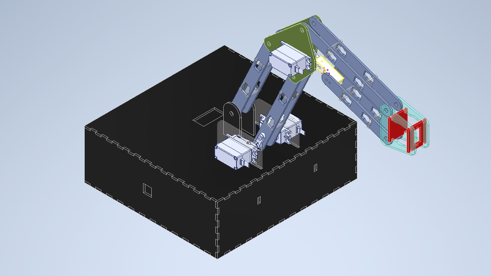
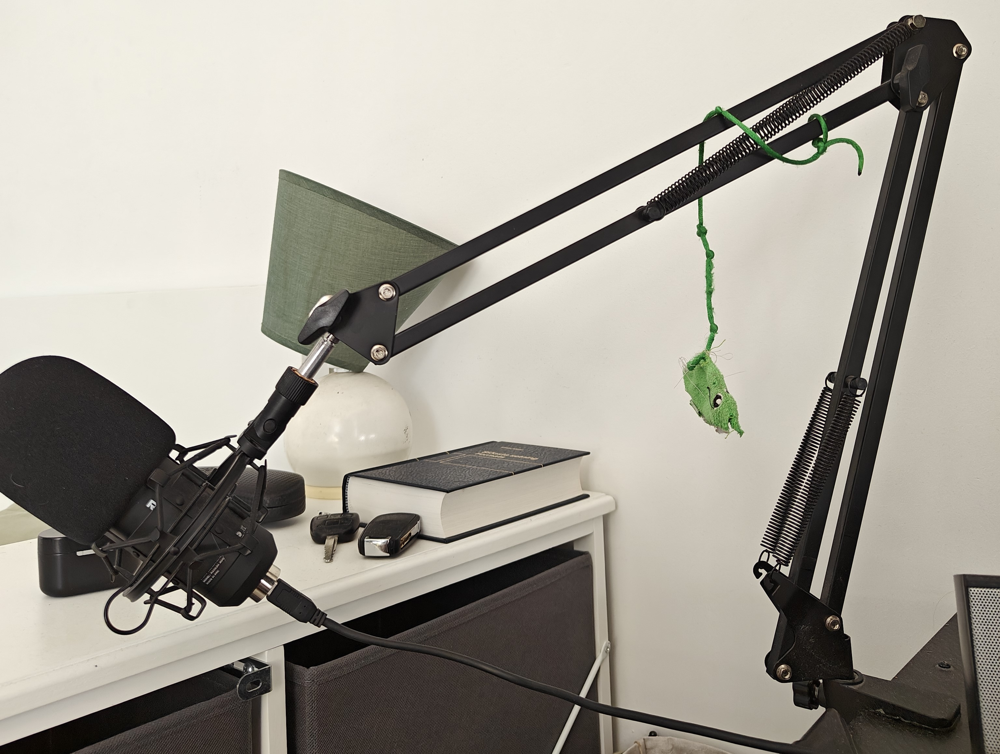
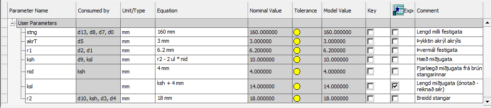
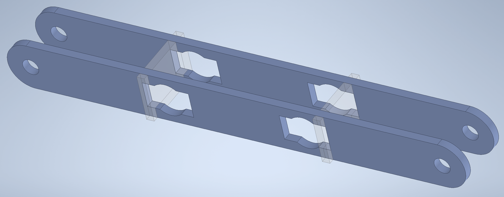
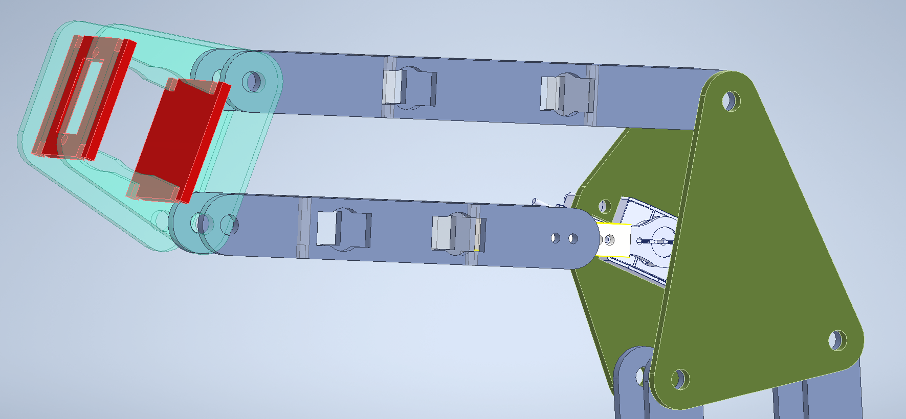
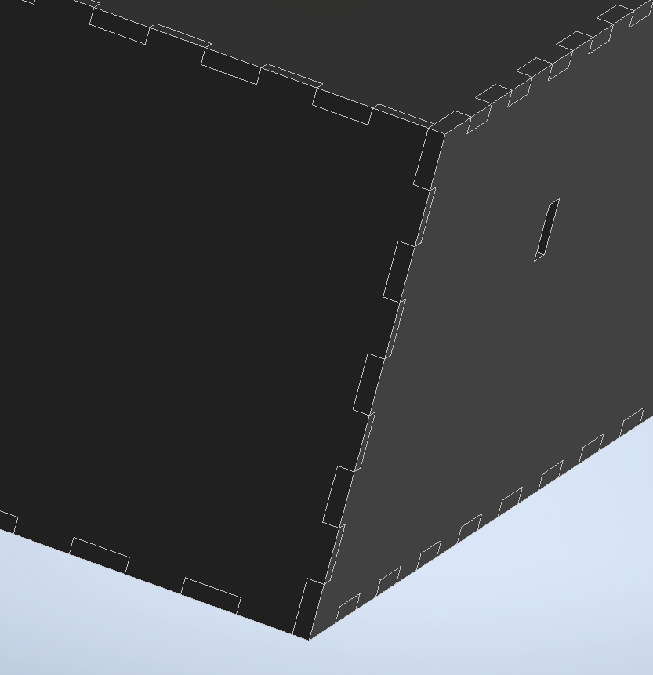
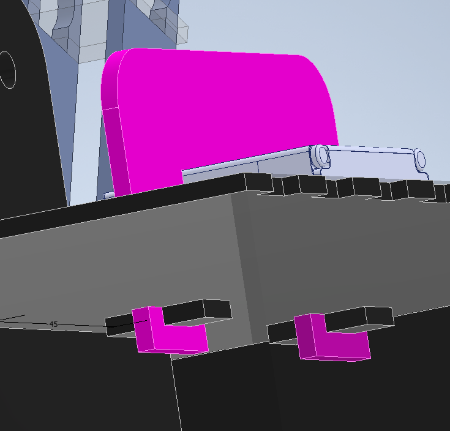
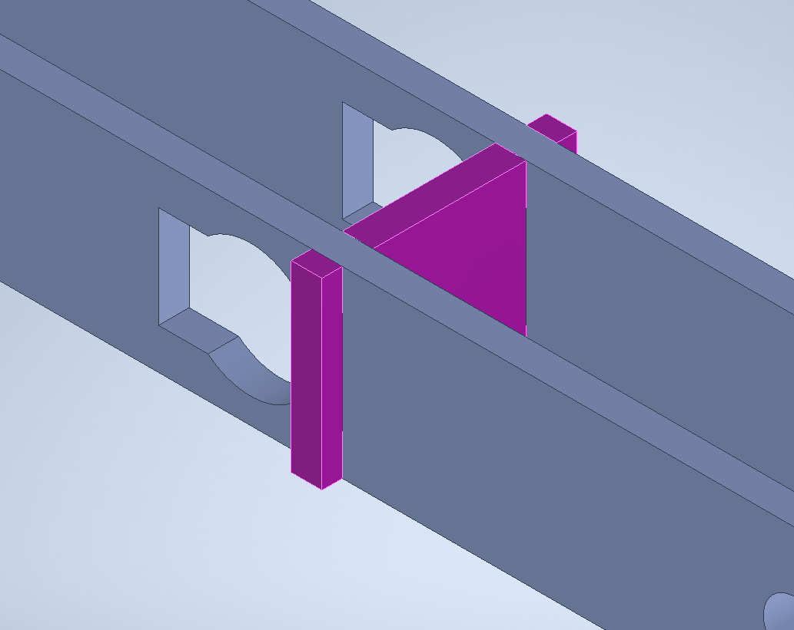
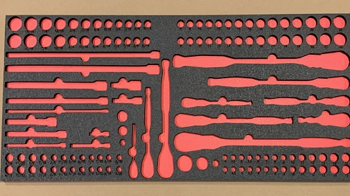

Verkefni 1 - Vefsíðugerð og útgáfustýring
Að búa til þessa hér síðu, sem hýsir upplýsingar um mig og vinnuframlagið mitt.
SkoðaParametrísk hönnun og tölvustuddur skurður

Róbotarmurinn var gerður sem verkefni í áfanganum VÉL205M - Tölvustýrður vélbúnaður. Verkefnið var unnið með Aaron Rosento og Ylju Karen en ég sá aðallega um hönnun allra mekaníska parta armsins og meirihluti þeirra var laserskorinn úr 3 mm akrýl.
Innblásturinn fyrir arminn var hljóðnema-armurinn minn (sjá mynd að neðan). Það eru einhverjir lampar sem eru einnig með svipaðan arm en aðalpælingin við þessa hönnun er að það eru alltaf tvær samsíða stangir milli snúningsása sem leiða til þess að þegar armurinn færist viðhelst gráðan á því sem stangirnar eru fastar við (í þessu tilfelli, hljóðneminn minn).
Öll hönnunin fór fram í Inventor þar sem mér fannst það þægilegasta forritið til að nota og ég gat þá sett alla partana á Vault svo ég gæti unnið í verkefninu í mismunandi tölvum. Byrjað var á því að stilla upp parametrum.

Fyrsti parturinn sem ég byrjaði að hanna var stöngin sjálf, hér fyrir neðan má sjá parametrana sem notaðir voru í stönginni ásamt stangarassemblyinu (tala meira um festingar síðar). Þessir parametrar voru síðan einnig exportaðir og notaðir í flestum hinum pörtum (sérstaklega akrT). Auðvitað voru einhverjir parametrar sem bættust síðan við í öllum hinum pörtunum en í stuttum málum eruð það t.d. fjöldi/stærð tanna fyrir fingerjoint á plötunum sem notaðar voru fyrir kassann, lengdir milli gata í festiplötum milli stanga, festingar fyrir mótora o.fl. Ég fer ekki mikið meira út í hina parametrana þar sem mig langar ekki að þessi síða verður alltof löng en þeir sem notaðir voru í stönginni nýttust mest og finnst mér sýna nógu vel parametríska hönnunarferlið.


Að nota parametríska hönnun fyrir þetta verkefni hjálpaði mikið. Til að byrja með var frekar mikil óvissa um stærðir stanganna (armurinn þurfti að lyfta glasi 35 cm upp frá 20 cm fjarlægð), en við byrjuðum með þær í ca. 10 cm. lengd og 12 mm breidd. Eftir að hafa prófað það fannst okkur þær vera aðeins of veikar og stuttar þannig þeim var stækkað í 16 cm lengd og 18 mm breidd. Með því að hafa parametra til staðar var mjög lítið mál að breyta stærðunum (þurfti bara að breyta 2 tölum). Parametrarnir nýttust einnig síðar þegar stangirnar þyrftu að vera fastar við mótora og því styttri til að varðveita réttri geometríu og á myndinni sést að neðri stöngin sem er föst við mótorinn sé aðeins styttri en hin. Svipað má segja um kassann sem armurinn stendur á, þar sem óvíst var fyrst hversu mikið af snúrum og öðru dóti við þyrftum að geyma þar inni.

Allir partar af róbotarminum voru annaðhvort geirnegldir eða skrúfaðir saman. Hér ætla ég aðeins að fara yfir þær gerðir geirneglda festinga eða "joints" sem við notuðum.
Líklegast einfaldasta gerðin af festingu er svokallað fingerjoint sem virkar þannig að tennur frá tveim pörtum (eða fleiri) klemmast á milli sín og núningur heldur þeim saman. Við notuðum þetta aðallega fyrir kassann okkar eins og sést á myndinni fyrir neðan

Næsta gerðin af festingu sem við notuðum er svokallað wedge joint. Með þessari gerð er ekki núningur að halda hlutum saman heldur verður mekanísk læsing en þá er lítill búti (líka 3 mm akrýl hjá okkur) af efni sem fer inní "slot" og heldur því partinum frá því að færast í einhverja ákveðna stefnu, sem var í okkar tilfelli upp áfram. Við notuðum þessa festingu til að festa mótorfestingarnar við kassann þar sem okkur fannst það vera líklegasti staður til að detta í sundur ef við höfðum bara notað slot joint (sem er reyndar líka notað en þar er bara núningur að halda þessu saman). Á myndinni er bleiki parturinn mótorfestingin en litli svarti kubburinn wedgeið sem fer í slottið til að halda festingunni á sínum stað.

Seinasta og athyglisverðasta gerðin af festingu í verkefninu okkar er svokallað bayonet- eða rotating key-lock joint. Hvernig þessi virkar er að það þarf að snúa plast inserti svo að hann festir tvær stangir saman, eins og sést á myndinni fyrir neðan. Hringurinn sem er í gatinu er svo að insertið hefur pláss til að snúast. Þessi festing virkar bæði vegna núnings og mekanískrar læsingar en fannst okkur passa best til að festa 2 stangir saman (sem var gert fyrir styrkleika).

Að búa til þessa hér síðu, sem hýsir upplýsingar um mig og vinnuframlagið mitt.
Skoða
Fræsing á svamp fyrir verkfæraskáp Team Spark.
Skoða